10 部片单 · 恐怖 / 科幻 / 惊悚 / 悬疑 / 剧情
| # | 片名 | 类型 | 评分 / 状态 |
|---|---|---|---|
| 01 | 坠落的审判 | 剧情 / 悬疑 / 法庭 | 8.7 / 96% / 86 |
| 02 | 珀尔 | 恐怖 / 心理惊悚 / 剧情 | 92% / 7.4 / 7.0 |
| 03 | 不 | 科幻 / 恐怖 / 悬疑 | 83% / 77 / 6.8 |
| 04 | 菜单 | 惊悚 / 黑色喜剧 / 悬疑 | 88% / 71 / 6.8 |
| 05 | 无边泳池 | 科幻 / 惊悚 / 心理恐怖 | 87% / 72 / 6.1 |
| 06 | 孤立无援 | 科幻 / 恐怖 / 惊悚 | 82% / 62 / 6.4 |
| 07 | 珍妮潘的规则 | 惊悚 / 剧情 / 恐怖 | 89% / 65 / 6.6 |
| 08 | 异世降临 | 科幻 / 恐怖 / 惊悚 | 76% / 54 / 5.4 |
| 09 | 北欧人 | 剧情 / 惊悚 / 史诗 | 90% / 82 / 6.8 |
| 10 | 孵化 | 恐怖 / 身体恐怖 / 剧情 | 92% / 75 / 6.2 |
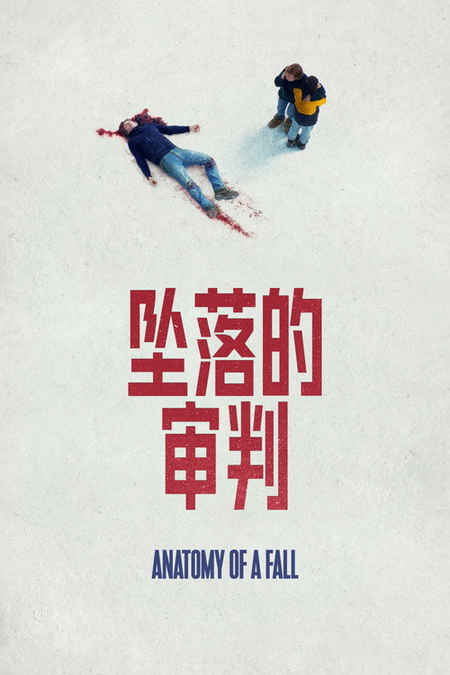
坠落的审判 Anatomy of a Fall
丈夫从阁楼掉了下去。问题是——是她推的吗？
剧情梗概
德裔女作家桑德拉和丈夫塞缪尔住在法国阿尔卑斯山间的一栋木屋。某天下午，塞缪尔从阁楼坠下身亡，血溅在楼下的雪地上。桑德拉说她当时在楼下工作，什么也没听见。一年后案件进入庭审——但被推上被告席的并不只是那场坠落：检察官开始逐字逐句地拆解她的小说，把虚构与现实的边界当成证据；她的婚姻、她的双性恋、她在关系里占的那个「更成功的」位置，全部被摆到台面上。他们十一岁、视力正在一点点消失的儿子丹尼尔，被要求出庭作证。
亮点
- 茹斯汀·特里耶自编自导（与阿尔蒂尔·阿拉里合写），拿下第 76 届戛纳电影节金棕榈奖；是第三部获此奖的女性导演作品。
- 桑德拉·惠勒饰桑德拉，凭此片拿到凯撒奖最佳女主角、欧洲电影奖最佳女演员与奥斯卡最佳女主角提名。
- 斯万·阿劳德饰辩护律师樊尚——他同时也是桑德拉的旧友，这条关系线让庭审多了一层说不清的暧昧；他凭此片获凯撒奖最佳男配角。
- 片中出庭作证的导盲犬 Snoop（真名 Messi）在戛纳拿下首届「狗狗金棕榈」，是当年最出圈的一个镜头。
- 全球票房约 3600 万美元，对一部法语文艺片是相当亮眼的成绩；法国本土观影人次超过 170 万。
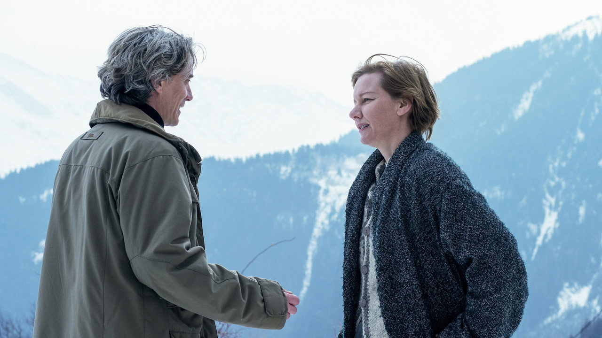
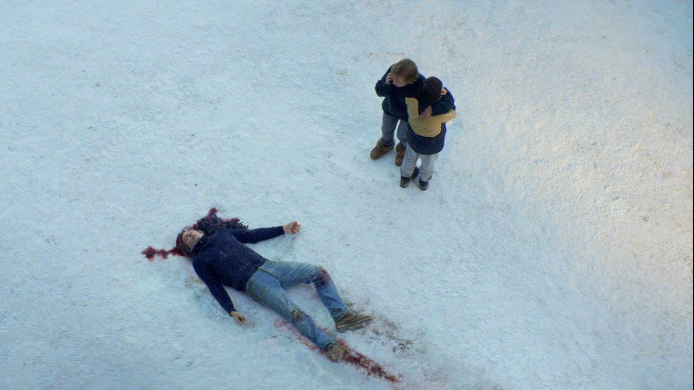
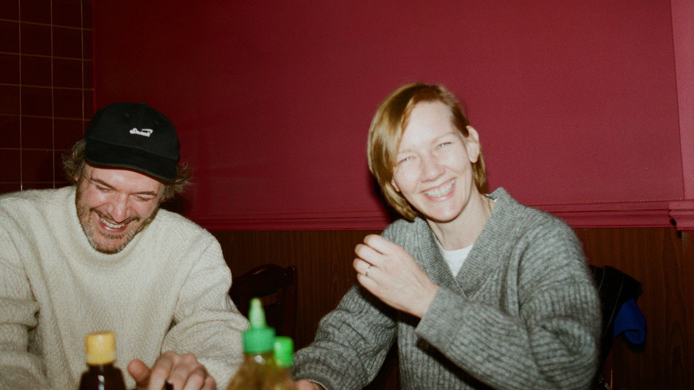
导演与主创 · 他们的历史作品
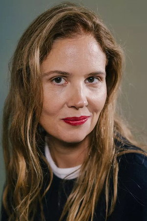
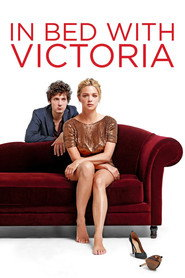
维多利亚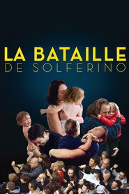
索尔菲雷诺之战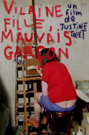
淘气的男孩女孩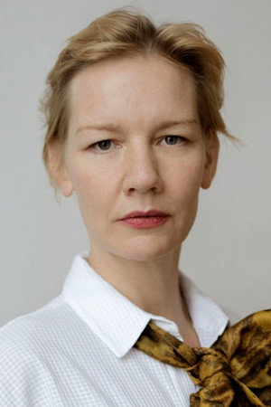
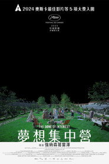
利益区域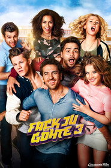
该死的歌德3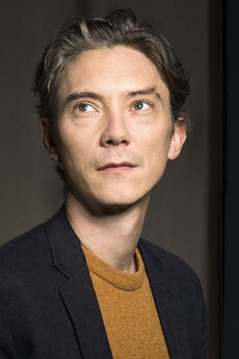
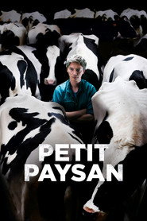
小农夫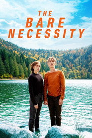
佩尔德利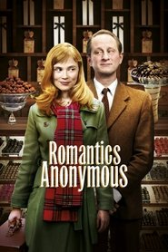
匿名情绪短评（轻微剧透）
它最厉害的地方是：从头到尾没有给你「真相」。特里耶把一桩疑似谋杀案处理成了一场对婚姻的公开解剖——法庭查的不是「谁杀了他」，而是「她是不是那种会杀人的妻子」。一旦问题变成这样，证据就永远不够用了：小说里的句子成了动机，一次多年前的争吵成了预谋，连她用英语而不是法语和丈夫吵架都成了罪证。桑德拉·惠勒的表演是全片的地基，她必须同时演得「完全无辜」和「完全不可信」，而这两个状态之间她几乎不换表情。法庭戏里最狠的一笔是那段被当众播放的录音——夫妻俩从客气到互相撕咬，你会突然明白这场审判真正的被告是「一段没法好好说话的关系」。缺点也讲清楚：151 分钟对一部法庭片偏长，中段几轮交叉询问的信息密度会让人疲惫；它不会给你答案，讨厌开放式结局的人会很不舒服。轻微剧透一句——影片最后让你自己做判决，而你在心里投下的那一票，暴露的其实是你自己对亲密关系的看法。这才是它拿金棕榈的原因。
为什么值得一看
喜欢《婚姻故事》那种把一段关系放到解剖台上的观众；想看一场不靠反转、靠细节累积推进的法庭戏的人；对「语言如何变成证据」这个命题有兴趣的人。几乎没有血腥画面，但情绪强度很高。内地已于 2024 年 3 月公映，流媒体可看。
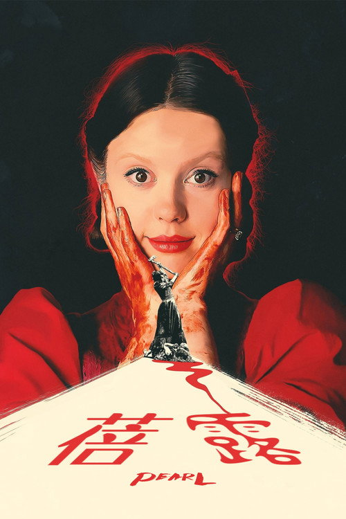
珀尔 Pearl
她只想离开这个农场。她真的，只想离开这个农场。
剧情梗概
1918 年，流感横行时期的美国乡村。年轻姑娘珀尔嫁给了霍华德，可丈夫一去前线，书信就渐渐断了。她留在霍华德家的农场里，照顾瘫痪不能说话的父亲，忍受永远不满意的母亲，日复一日地干农活、喂猪、喂鳄鱼。她唯一的念想是去当电影明星——镇上来了选拔舞蹈演员的机会，那是她能离开这里的唯一出口。当这个出口也关上时，珀尔身上某种东西开始裂开。
亮点
- 缇·威斯特自编自导自剪，与主演米娅·高斯共同编剧；本片是《X》(2022) 的前传，两部片背靠背在新西兰拍摄。
- 米娅·高斯在《X》里演的是年轻女孩玛克辛，在本片里演的是同一角色的老年版珀尔——一个演员在一个系列里分饰互为镜像的两个人，这在恐怖片里几乎没有先例。
- 视觉上刻意复刻 1930 年代特艺七彩的饱和配色与老好莱坞运镜，配乐也直接挪用黄金时代风格，与内容形成强烈反差。
- 影片最著名的是结尾那段长达数分钟、几乎一镜到底的独白：米娅·高斯对着镜头从微笑说到崩溃，被大量影评人拿来与《小丑》的演法比较。
- 系列第三部《玛克辛》(MaXXXine, 2024) 已上映，与《X》《珀尔》构成完整的「X 三部曲」。
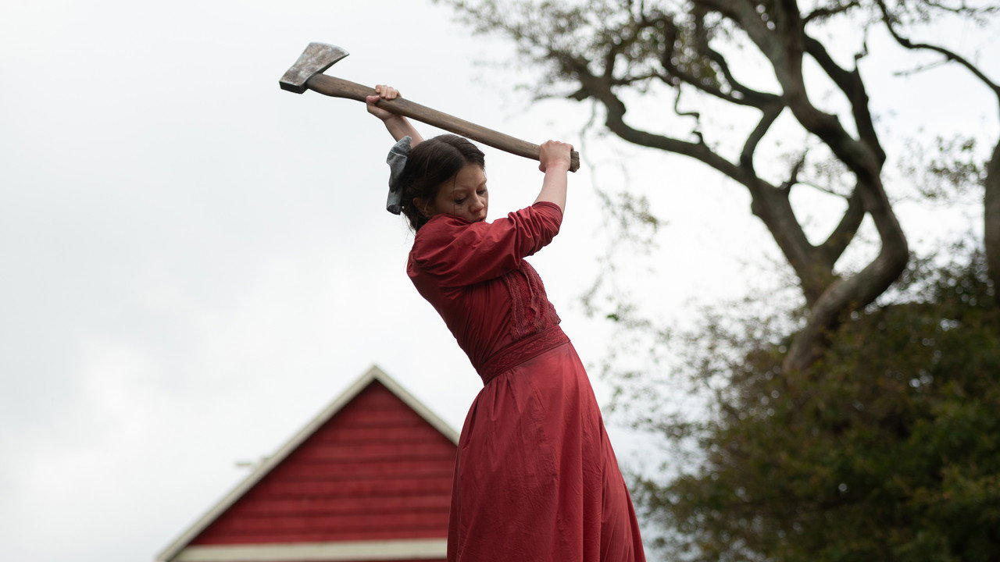
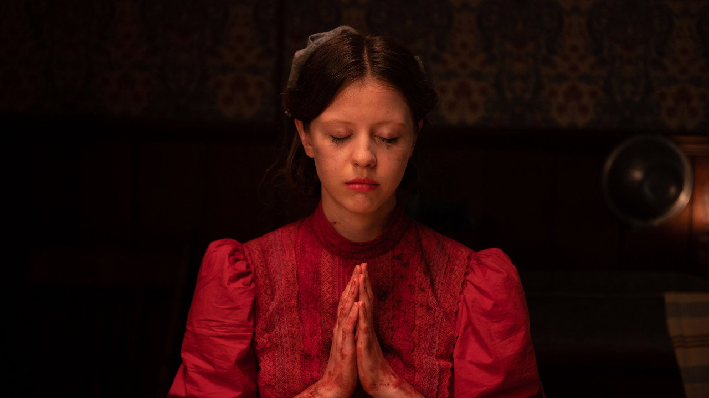
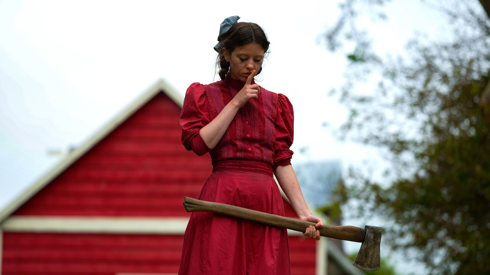
导演与主创 · 他们的历史作品
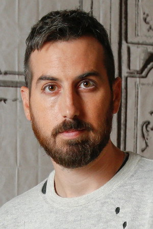
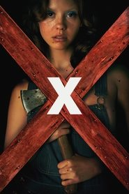
X 玛克辛
玛克辛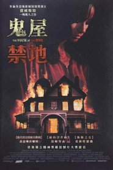
邪恶之屋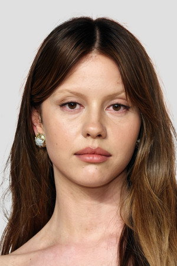
玛克辛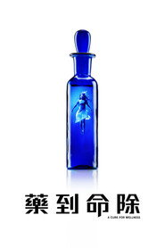
救命解药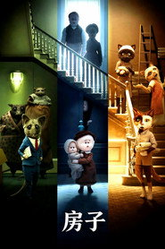
房子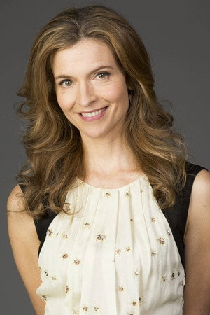
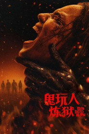
鬼玩人：炼狱 巨人捕手杰克
巨人捕手杰克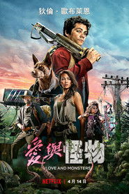
爱与怪物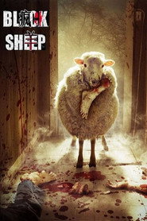
疯羊短评（轻微剧透）
《珀尔》是近年少见的、把「彩色」本身当成恐怖手段的片子。威斯特故意用 1950 年代家庭剧的亮度去拍一个连环杀手的养成——明黄、湖蓝、草绿，农场看起来像明信片；而正是在这种甜腻的底色上，珀尔一锄头下去的红色才格外刺眼。这不是廉价的明暗对比，而是对「美国小镇叙事」本身的讽刺：那种我们从小在电影里看到的、干净又明亮的美国梦，本身就需要一个珀尔在外面替它处理脏东西。米娅·高斯的表演是全部：她必须让一个杀死父亲、母亲和陌生人的角色保持某种可理解性，而她靠的不是「演疯」，是把珀尔演成一个被剥夺了所有可能性的普通女孩——她的每一步都有逻辑，只是逻辑的起点是绝望。缺点也说：中段节奏偏散，放映员那条线功能上只是为了与《X》互文，单独看略显生硬；暴力段落的升级也稍显公式化。轻微剧透一句：最后那场戏，珀尔对着回家的丈夫挤出那个一直持续到字幕结束的笑——那不是胜利，那是她终于找到了一个可以演一辈子的角色。
为什么值得一看
想看一部「靠表演撑起来」的恐怖片的人；对老好莱坞视觉风格有兴趣的观众；能接受极端暴力与弑亲内容的成年观众（R 级）。建议先补《X》再看本片，顺序反过来会损失一部分趣味。内地未引进。
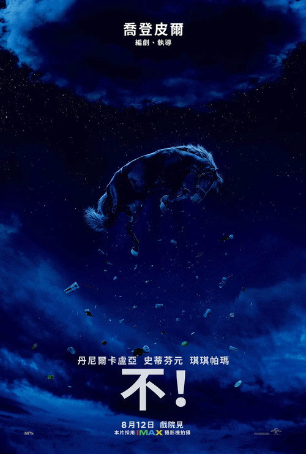
不 Nope
天上有个东西。它不下来，也不走。
剧情梗概
加州内陆的峡谷里，欧杰与艾默拉德兄妹继承了父亲留下的驯马场。父亲在一场离奇事故中死去——天上掉下来的一枚硬币，正好击穿他的头骨。此后，马开始失踪，云层里似乎藏着什么东西，一动不动地悬在那里。兄妹俩决定做一件他们熟悉的事：把它拍下来。他们买摄像机、请技术员，还去找了当年那场猩猩杀人事件的幸存者——一个如今靠贩卖创伤记忆谋生的人。而那个「东西」比他们想象的更会看人。
亮点
- 乔丹·皮尔第三部长片（前两部《逃出绝命镇》《我们》），他的第一部科幻片，也是投资最大的一部，预算约 6800 万美元。
- 摄影霍伊特·范·霍特马（《星际穿越》《敦刻尔克》）用 IMAX 65mm 与全景摄影机实拍，是近年少见的坚持胶片大画幅的类型片。
- 丹尼尔·卡卢亚（《逃出绝命镇》《黑豹》）饰哥哥欧杰；柯柯·帕尔默饰妹妹艾默拉德，凭此片拿下多个影评人协会最佳女配角；史蒂文·元（《燃烧》）饰游乐园老板里奇。
- 影片把「奇观消费」当成主题：每个人都在试图拍下、直播、贩卖那个东西，而这个设定本身就是皮尔对观众的一次提醒。
- 全球票房 1.72 亿美元，是皮尔三部曲里商业成绩最好的一部，北美开画 4400 万美元。
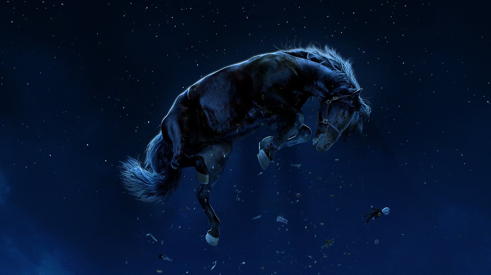
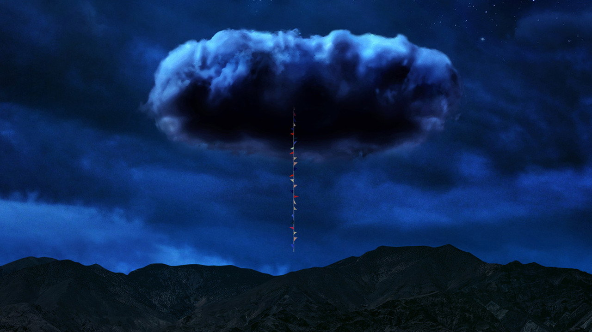
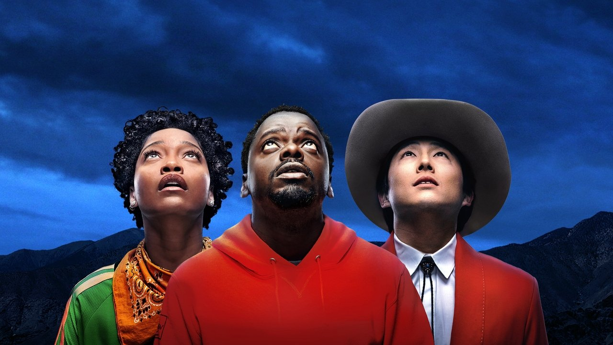
导演与主创 · 他们的历史作品
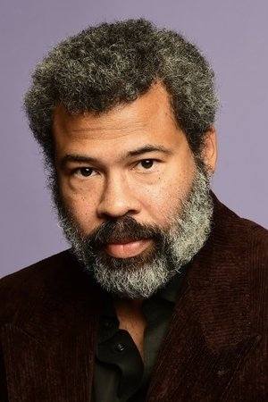
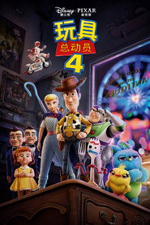
玩具总动员4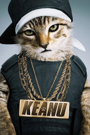
基努猫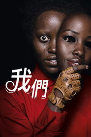
我们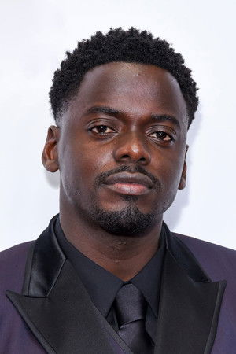
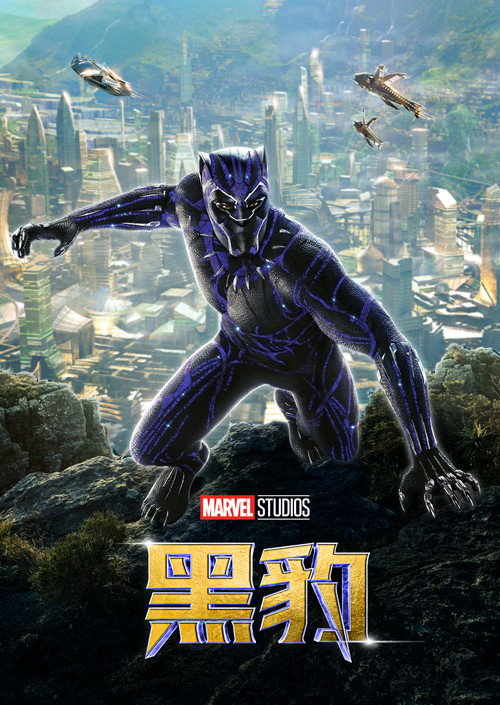
黑豹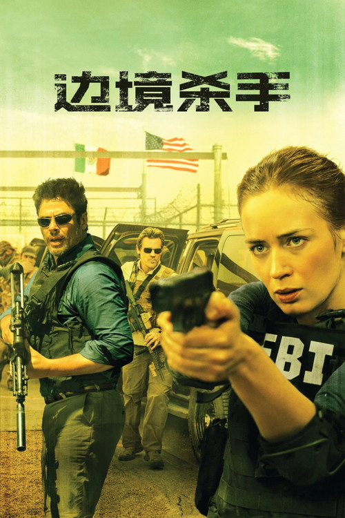
边境杀手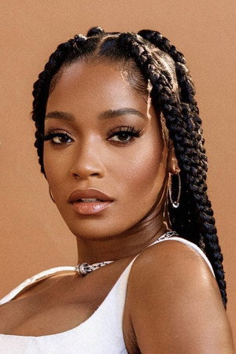
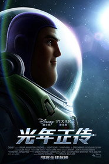
光年正传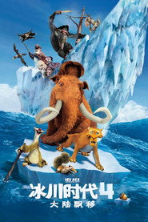
冰川时代4：大陆漂移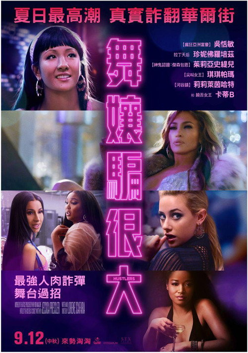
舞女大盗短评（轻微剧透）
皮尔这次野心更大，也更散。他把三个议题叠在了一起：对影像奇观的成瘾、被抹去的好莱坞劳工史（片中那段「骑马的人」是真实存在的早期电影素材）、以及「我们该怎么面对一个不肯给出意义的东西」。这三条线没有被完全拧成一股，所以第二幕显得臃肿——尤其里奇那条支线虽然贡献了全片最令人不适的一场戏，但与主线只是主题呼应，不是情节推进。它真正厉害的地方在别处：皮尔把 UFO 拍成了一个会「观察」你的生物，而不是来侵略的军队。那条「不要看它」「它看你才会动」的规则，把整部片从科幻片拉回了恐怖片——你害怕的不是它有多大，而是它有意图。技术上无可挑剔：白天的空镜头、夜晚的云层、IMAX 画幅下的峡谷，都值得大银幕。轻微剧透：当你终于看清它张开的样子时，你会发现它其实很像一只眼睛——这个设计一旦想明白，整部片就通了。
为什么值得一看
喜欢《逃出绝命镇》《我们》那种概念先行型恐怖片的人；想在大银幕上看一部真正的 IMAX 胶片科幻片的人；对「镜头即掠夺」这个母题有兴趣的观众。PG-13，血腥不多，但有几场压迫感极强的段落。内地未引进。
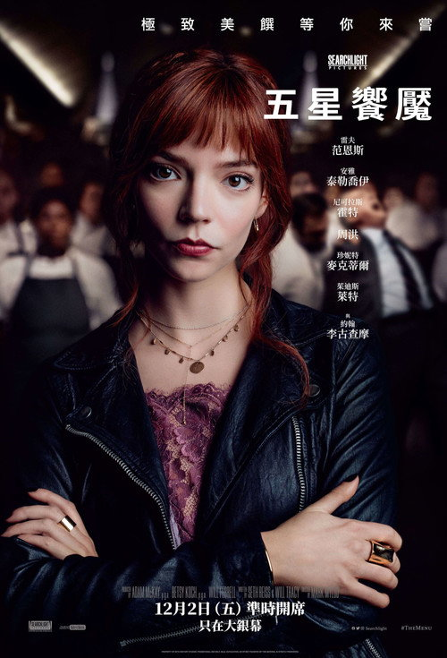
菜单 The Menu
这一餐有十二道菜。每一道，都比上一道难以下咽。
剧情梗概
十二位客人乘小船抵达一座私人岛屿上的顶级餐厅「霍桑」，主厨斯洛维克是当代最被神化的厨师之一，人均餐费一千两百五十美元。客人里有美食评论家、投资银行家、过气电影明星、一对来庆祝纪念日却各怀心思的情侣，以及一个本不该在这里的姑娘玛戈——她是临时替补来的。第一道菜上桌时，主厨说：「请什么都不要吃。」接下来的一道道菜，开始逐一揭露每位客人自己都不愿承认的那部分。
亮点
- 导演马克·米罗，代表作是 HBO《权力的游戏》《继承之战》的多个关键集；本片是他的电影代表作。
- 拉尔夫·费因斯（《辛德勒的名单》《布达佩斯大饭店》）饰主厨斯洛维克，凭此片获金球奖音乐喜剧类最佳男主角提名。
- 安雅·泰勒-乔伊（《后翼弃兵》《北欧人》）饰玛戈——唯一一个「不在名单上」的客人，也是全片的变量。
- 周洪（《瞬息全宇宙》）饰餐厅总管艾尔莎；尼古拉斯·霍尔特饰那个恨自己顾客的美食狂热分子。
- 剧本以「菜单」为叙事骨架，每一章就是一道菜；真实菜品由美食顾问设计并实拍，烹饪过程全部由专业厨师完成。
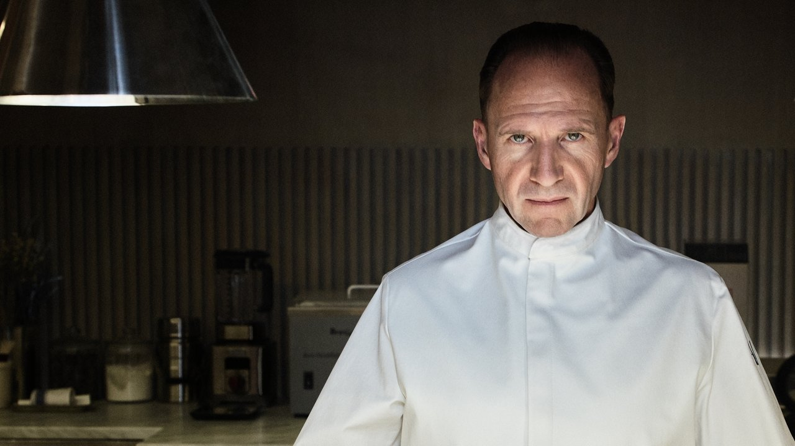
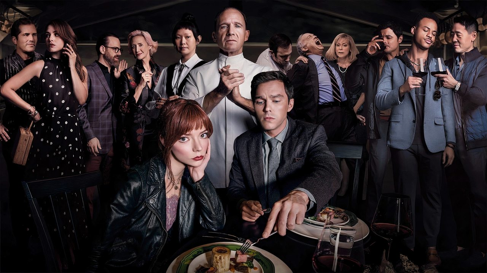
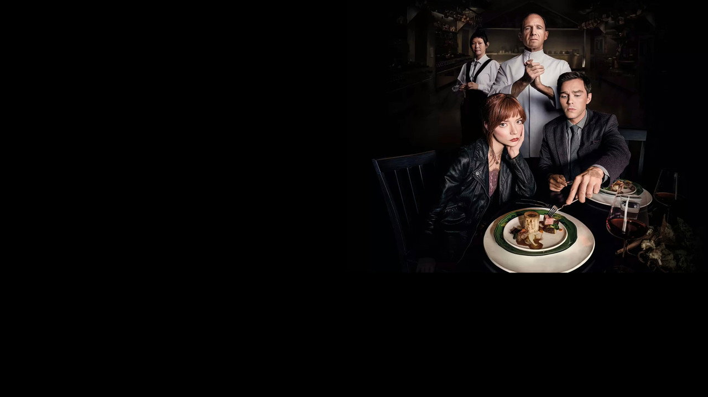
导演与主创 · 他们的历史作品
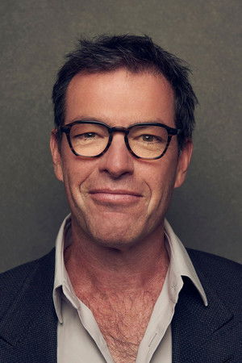
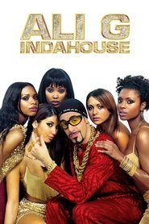
谁与争疯 女巫
女巫
 布达佩斯大饭店
布达佩斯大饭店 辛德勒的名单
辛德勒的名单 哈利·波特与死亡圣器（下）
哈利·波特与死亡圣器（下） 王牌特工：源起
王牌特工：源起短评（轻微剧透）
《菜单》最好的地方是它知道自己是个寓言，所以不装。它要是认真去讲一个「主厨是疯子」的故事，那就只是一部普通惊悚片；它真正的目标是一整桌当代文化——美食评论的话语权、对匠人的消费式崇拜、把热爱变成身份的粉丝、以及用「我懂行」来压人的等级制。斯洛维克并不是在惩罚坏人，他是在执行一套审美审判，而这套审判同样傲慢——费因斯演得非常清楚：他的怒不是来自某一道菜被批评，而是来自「我付出了这么多，你们却只把它当成社交货币」。安雅·泰勒-乔伊的角色是全片的关键设计，她是个「不该在场的人」，所以是唯一能对整套仪式说「不」的人。缺点：后半段落入类型片惯性，几处转折的逻辑经不起细想；对「有钱人都该死」的处理也偏省事。轻微剧透：结尾那个芝士汉堡不是玩笑，它是影片真正的论点——在所有精致的苦行之后，你真正想吃的东西往往简单得可笑。
为什么值得一看
喜欢《寄生虫》那种阶层讽刺 + 类型片结构的人；对高端餐饮文化有兴趣的观众；想看一场轻松但带刺的黑色喜剧的人。R 级，含暴力与自残场面但处理克制。内地未引进。
无边泳池 Infinity Pool
他们不会让你坐牢。他们会做一个你，然后当着你的面杀掉那个你。
剧情梗概
小说家詹姆斯和妻子艾米在虚构岛国利托尔托的度假村里度假。度假村有围墙，墙外是禁止离开的贫困地带。一天夜里他们驾车外出，撞死了一名当地人。按当地法律，凶手要被处死——但这里有一项产业：付费克隆一个你的复制体，让复制体替你受刑，你本人可以在一旁观看。詹姆斯照做了。从那一刻起，他开始反复制造自己，而每看一次自己被处死，他身上就有某个东西更松动一点。
亮点
- 布兰登·柯南伯格自编自导，他的父亲是大卫·柯南伯格（《变蝇人》《录像带谋杀案》）；他的前作是《病毒抗体》(2012)。
- 亚历山大·斯卡斯加德（《真探》第一季、《北欧人》）饰詹姆斯，几乎全片每一场戏都在场。
- 米娅·高斯（《珀尔》《X》）饰另一位客人盖比，是把詹姆斯推过那条线的人，凭此片获多个类型片表演奖提名。
- 影片在克罗地亚与匈牙利实景拍摄，面具、仪式与「替身」的视觉设计以实物特效与实景搭建完成，几乎不依赖后期。
- 北美由 Neon 发行未分级版；这也是继《无边泳池》之后，Neon 又一部因尺度引发讨论的作者恐怖片。
导演与主创 · 他们的历史作品
 哥斯拉大战金刚
哥斯拉大战金刚 北欧人
北欧人短评（轻微剧透）
布兰登·柯南伯格这次比他父亲更冷。老柯南伯格的身体恐怖里总有一种对「变异」的着迷，小柯南伯格关心的是另一件事：当惩罚可以被外包，罪疚感会不会一起被外包？影片的核心设定——克隆一个你替你去死——是个极狠的科幻前提，因为它让「后果」这个概念失效了。詹姆斯每看一次自己被处死，就少一点人味；更可怕的是他开始享受这件事：他不再是一个犯了罪的人，而是一个消费犯罪体验的游客。这才是影片真正的恐怖——不是那些面具和血，是它对「富人可以把一切都变成体验」的精准描写。斯卡斯加德的表演是那种「你明知道他在演崩溃，但就是移不开眼」的类型，高斯则把「我已经彻底无所谓了」演成了一种诱惑力。缺点必须说：117 分钟里有相当一部分是重复的仪式场面，中段明显拖沓；它对暴力的展示接近剥削片，部分观众会受不了。豆瓣 6.3 / IMDb 6.1 与烂番茄 87% 的落差说明它是影评人的片子，普通观众观感差很多。轻微剧透：最后他到底有没有回到原来那个身体？影片故意不回答——而这正是它想说的：当你已经不在乎哪个是你，问题本身就没有意义了。
为什么值得一看
喜欢《某种物质》《黑镜》那种概念型科幻惊悚的人；能接受高强度暴力、性与身体恐怖的成年观众；对「特权与免责」这个议题有兴趣的人。尺度接近未分级版本，内地未引进。
孤立无援 No One Will Save You
整个小镇都在躲着她。这不是她的错，也不是今天才开始的。
剧情梗概
布琳住在小镇上她从小长大的房子里，一个人，安静地过着日子——做针线、整理家务、给母亲写永远不会寄出的信。镇上的人对她很冷淡，原因没人明说。某天夜里，房子里出现了不属于她的声音和脚步。紧接着，一艘飞行器悬停在小镇上空。布琳必须独自面对这些入侵者，而她真正要对付的，其实是另一件事。
亮点
- 布莱恩·达菲尔德自编自导，此前是《深海异兽》《爱与怪物》的编剧；本片是他的第二部长片。
- 凯特琳·德弗（《高材生》《不可饶恕》《最后生还者》）饰布琳，几乎独挑大梁。
- 全片几乎没有对白——布琳在片中一句完整的台词都没说过，叙事完全靠表演、声音设计与调度完成。
- 影片在 Hulu 上线后迅速成为平台原创电影的观看纪录保持者之一，是 2023 年流媒体恐怖片里讨论度最高的一部。
- 外星生物由实物特效加少量 CG 完成，导演坚持让演员与实体道具同场表演。
导演与主创 · 他们的历史作品
 辣手保姆
辣手保姆短评（轻微剧透）
这是一部把「限制」当成方法论的电影。达菲尔德给自己设了两条规矩：主角不说话，故事不离开这一栋房子和周边几百米。结果是全片所有的紧张感都必须从声音和身体里挤出来——德弗用背影、呼吸、关门的速度就把一部外星入侵片撑住了，这在近年的流媒体恐怖片里非常罕见。更妙的是它的结构：前二十分钟你会以为这是一部关于「被孤立者」的社会剧情片，入侵开始后你才反应过来——前面那些冷遇不是铺垫，是动机。影片到最后把「外星入侵」处理成了一个近乎私人的、关于愧疚与自我惩罚的寓言，这一点我很买账，因为它让类型片的外壳有了真正的内核。缺点也明确：93 分钟里中段有一整段重复的追逐略显冗长；外星人的设计有观众会觉得廉价。Metacritic 62、IMDb 6.4 与烂番茄 82% 的落差说明口碑两极——影评人喜欢它的实验性，观众觉得它太闷。轻微剧透：结尾那场戏会重新解释前面所有镇上人的态度，只要你撑到最后，前面所有的不舒服都会得到回报。
为什么值得一看
喜欢《寂静之地》那种少台词、靠氛围取胜的片子的人；想看凯特琳·德弗个人表演秀的人；对外星入侵题材有兴趣但不想看宏大战争场面的观众。几乎无血腥，但心理压迫感强。内地未引进，Disney+ / Hulu 可看。
珍妮潘的规则 The Rule of Jenny Pen
养老院里有个人，手里有个玩偶。玩偶会说话。
剧情梗概
斯蒂芬·莫滕森是一位受人尊敬的退休法官，一次近乎致命的中风让他半身不遂，只能住进养老院。在这里，他失去了名字、尊严和所有的自主权。院里还有一位叫戴夫·克里利的老人，他有个布偶「珍妮潘」，每天用它表演一段童稚的木偶戏，而木偶嘴里说出来的，是赤裸的羞辱与威胁。克里利用这套把戏支配着整层楼的老人，没人管，也没人信。莫滕森决定做点什么——可他连走路都要人扶。
亮点
- 新西兰导演詹姆斯·阿什克罗夫特，前作是《在黑暗中回家》(2021)；本片改编自欧文·马歇尔的同名短篇小说。
- 杰弗里·拉什（《闪亮的风采》奥斯卡影帝、《加勒比海盗》）饰莫滕森；约翰·利思戈（《闪灵》《王冠》里的丘吉尔）饰克里利。
- 两位主角合计超过 150 岁，全片几乎都是老演员的对手戏；拉什凭此片拿下多个类型片奖项的最佳男演员。
- 影片在澳洲与新西兰的奇幻电影节展映后口碑发酵，被不少影评人列为 2025 年最被低估的惊悚片之一。
- 拍摄地是一间真实运作过的养老机构，剧组请了多位高龄群演，片中大量场景是实景长镜头。
导演与主创 · 他们的历史作品
 星际穿越
星际穿越短评（轻微剧透）
这部片的恐怖来源非常具体，也很不体面：它是「老」本身。莫滕森失去的首先是语言——中风让他说话变慢，而在一个没人愿意慢下来听你的地方，说不清楚就等于不存在。克里利看准的就是这个：他用木偶说话，因为木偶的话没人会当真，所以他可以借着「玩笑」把最恶毒的东西说出口。这条设计精准得让人不舒服，因为它照搬到现实里同样成立——任何一个权力不对等的封闭机构，都会长出这种人。两位老演员的表演是全部看点：拉什把「愤怒被困在坏掉的身体里」演得极其具体，他用还能动的那只手、用眼神、用一声哽住的气音完成所有表达；利思戈则完全放弃了「演坏人」，他演的是一个以折磨他人为唯一娱乐的、无聊透顶的老头。缺点：中段节奏偏慢，几场戏有重复感；克里利这个角色是纯功能性的，没有任何背景交代，部分观众会觉得单薄。轻微剧透：最终两人并不是「对决」，而是莫滕森做出了一个代价极大的选择——影片没有在这件事上做任何道德安抚，这让它比同类片硬气得多。
为什么值得一看
想看一部不靠血浆、靠人物关系压迫感取胜的惊悚片的人；对老年、失能、照护机构这些议题有感受力的观众；杰弗里·拉什与约翰·利思戈的影迷。几乎没有血腥，但情绪压抑，涉及对老人的虐待与羞辱，心理承受力弱者慎入。内地未引进。
异世降临 Ash
她在另一个星球上醒来，同事全死了，而她不记得发生过什么。
剧情梗概
行星考察站的科学家莉雅从昏迷中醒来，发现站内同事全部惨死，自己对袭击毫无记忆。前来接应的另一名科学家布莱恩抵达后，两人开始拼凑真相。可随着记忆一点点回来，莉雅发现事情不是「有外人闯入」那么简单——这个星球本身在改变人，而她已经在这里待了太久，久到分不清哪些记忆是自己的。
亮点
- 导演是音乐人 Flying Lotus（本名 Steven Ellison），这是他的第三部长片；他是已故爵士钢琴家艾丽丝·柯川的侄孙，配乐由他本人完成。
- 艾莎·冈萨雷斯（《阿丽塔：战斗天使》《极盗车神》）饰莉雅；亚伦·保尔（《绝命毒师》《黑镜》）饰布莱恩。
- 影片由 XYZ Films 出品，视觉上大量使用实景布光、胶片质感与实拍特效，被不少评论拿来与《异形》《降临》《湮灭》比较。
- Flying Lotus 亲自写配乐，把电子、爵士与噪音层叠成一套「行星在呼吸」的声音系统，声音设计是本片评价最高的部分。
- 票房规模极小，主要靠流媒体与类型片影迷口碑传播，是典型的「作者型科幻小成本」。
导演与主创 · 他们的历史作品
哥斯拉大战金刚短评（轻微剧透）
《异世降临》是一部「氛围远强于叙事」的片子。我认为这不算缺点，但需要提前说清楚。Flying Lotus 从音乐人的角度拍科幻，结果是他把整部片当成一首不断变形的长曲来处理：色彩的推进、噪音的堆积、画面颗粒的变化，都比剧情更早一步告诉你「有什么不对」。艾莎·冈萨雷斯几乎撑满全片，她的表演是那种在迷雾里一点点沉下去的演法，很适合这部片；亚伦·保尔的角色则承担「让你怀疑她」的功能——他从一开始就太正常了。缺点讲明白：剧情确实是类型片的旧骨架（失忆、猜疑、外星感染、最后揭底），中段有一段时间节奏停滞；IMDb 5.4、豆瓣 5.9 与烂番茄 76% 的落差说明观众的期待——一部《异形》式的片子——和实际得到的（一部氛围电影）不匹配。轻微剧透：真正的转折在于莉雅发现自己并不是受害者。这个设计不新鲜，但影片用一个极安静的镜头而不是一段解释性对白来完成它，这一下就把它从平庸里拉了出来。
为什么值得一看
喜欢《湮灭》《降临》《飞向太空》那种慢速、感官优先的科幻片的人；对声音设计与视觉风格有要求的观众；Flying Lotus 的乐迷。节奏偏慢、留白多，追求紧凑情节的会失望。内地未引进。
北欧人 The Northman
他要杀了自己的叔叔。这是他从小被教的唯一一件事。
剧情梗概
公元 895 年。少年阿姆莱斯目睹父亲——国王奥凡迪尔——被自己的弟弟费约尼尔杀害，母亲古德伦被掳走。他逃上一条船，发誓要复仇、要救母亲、要杀叔叔。多年后他长成一名狂战士，随一支劫掠队伍回到故土，伪装成奴隶混进费约尼尔的领地。一切都按他计划进行——直到他遇见一位女巫，她说：命运已经写好了，你只需要走过去。
亮点
- 罗伯特·艾格斯自编自导，前作是《女巫》(2015) 与《灯塔》(2019)；本片是他的第一部大制作，预算约 7000–9000 万美元。
- 亚历山大·斯卡斯加德为这个角色训练了数年，大量特技与战斗场面由他本人完成；他与艾格斯从 2011 年就开始筹划这部片。
- 妮可·基德曼饰母亲古德伦；伊桑·霍克饰被杀的国王；安雅·泰勒-乔伊饰女奴奥尔加；威廉·达福、比约克、克莱斯·邦参演。
- 剧组在北爱尔兰与冰岛实景拍摄，服装、武器、船只、村落全部按维京时代考古资料复原，仪式场面请了历史顾问与萨满仪式实践者参与。
- 全球票房 6900 万美元未回本，但很快成为「导演剪辑版更值得看」的代表案例之一。
导演与主创 · 他们的历史作品
 女巫
女巫 灯塔
灯塔 Brothers哥斯拉大战金刚
Brothers哥斯拉大战金刚短评（轻微剧透）
艾格斯拍了一部反《角斗士》的复仇片。通常的复仇叙事会给主角一条清晰的正义线，让你跟着他爽；《北欧人》做的是相反的事——它让你看着阿姆莱斯被一个誓言推着走了二十年，最后你发现这个誓言从头到尾没问过他想要什么。影片里有大量「命运」的意象：女巫、乌鸦、被预言过的场景、反复出现的树与门。艾格斯用这些把一个心理问题（人要为自己的执念负责吗？）变成了一个神话问题。技术上它无可挑剔：长镜头调度、火光中的夜戏、那场火山口的决斗，都是近年最好的实拍动作场面之一。缺点：137 分钟里中段节奏明显放缓，尤其在农场的第二部分；它也确实「冷」——角色的情感表达是刻意压缩的，习惯了通俗维京片的人会非常不适应。豆瓣 6.8 与烂番茄 90% 的落差，正是作者电影与大众预期的错位。轻微剧透：结尾那场决斗之后，影片没有给你「回家重建王国」的安慰，它给的是一句关于代价的话——而那句话正是它从一开始就在准备的。
为什么值得一看
喜欢《女巫》《灯塔》那种作者性极强的历史题材电影的人；想看大银幕实拍冷兵器与火光的人；对维京神话、萨满仪式与命运观有兴趣的观众。R 级，含大量暴力、血腥与裸体；叙事冷峻、节奏偏慢。内地未引进。
孵化 Hatching
她捡到一枚蛋。她把它藏在枕头下面，等着它出来。
剧情梗概
十二岁的廷娅练体操。她的妈妈经营着一个叫《美好日常》的博客，把一家四口的生活经营成完美的样板。廷娅知道那不是真的，但她还是拼命想赢一次比赛，好让妈妈真的高兴一次。一天夜里，一只受伤的鸟撞进她家，廷娅在树林里找到一枚奇怪的蛋。她把蛋带回房间，藏在枕头下暖着。蛋越来越大。终于，有什么东西从里面出来了——而它长得越来越像廷娅。
亮点
- 汉娜·贝格霍尔姆的导演处女作，剧本由伊利亚·劳齐（《鬼乱》系列编剧）撰写；影片在 2022 年圣丹斯电影节午夜单元首映。
- 西里·索拉林纳饰廷娅，拍摄时她本人也是青少年，几乎全片的重量都压在她身上。
- 索菲娅·海基拉饰母亲——一个把「完美家庭」当成作品来经营的人，是全片真正的反派。
- 那个「孵出来的东西」由实物提线偶加特效化妆完成，没有用纯 CG，这是本片被身体恐怖影迷推崇的主要原因。
- 影片入选烂番茄 2022 年度恐怖片榜单第 10 名；预算约 390 万美元，全球票房仅约 60 万美元，是典型的小成本口碑片。
导演与主创 · 他们的历史作品
短评（轻微剧透）
《孵化》把「妈妈博主」这个当代现象拍成了一部身体恐怖片，而且拍得非常狠。它最聪明的地方在于：它没让母亲成为一个明显虐待孩子的恶人，而是让她成为一个「太努力了」的人——她给廷娅的爱是真实的，但这份爱的形式是「你必须完美，因为我的作品需要你完美」。于是怪物就不是从外面来的：那只从蛋里爬出来的东西，是廷娅所有被咽下去的情绪长出的实体，它替她做她不敢做的事，也替她承受她不能承受的东西。这个设定不算新鲜（《鬼书》《生吃》都做过），但贝格霍尔姆的执行很扎实——她把怪物设计成一步步「变完整」的过程，它每更像廷娅一点，你就更难受一点。实拍特效的质感救了它：那个东西的手感、黏液与动作，都让人相信它真的在房间里。缺点：主题表达相当直白，几乎没有留白余地；IMDb 6.2、观众分仅 59% 说明它「影评人叫好、观众不买账」——很多人觉得它太用力、太说教。轻微剧透：最后母女之间那场戏会让你明白，真正的「孵化」并不是在廷娅房间里发生的。
为什么值得一看
喜欢《生吃》《野蛮人》《回应我》那种把心理问题外化成怪物的恐怖片的人；能接受强烈身体恐怖与黏腻特效的观众；对「完美家庭叙事」这个议题有共鸣的人。含极端身体恐怖与自残暗示，敏感者慎入。内地未引进，海外流媒体可看。